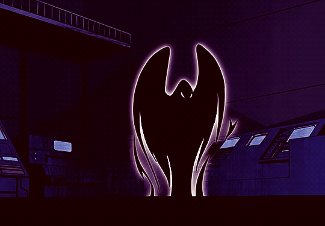

Rachel Roth é uma super-heroína da DC Comics e do universo. Ela é mais famosa por ser membro dos Jovens Titãs e foi uma das principais heroínas do desenho animado. Assim como todos os seus companheiros Teen Titans e seus inimigos, ela também se baseou no personagem de mesmo nome na série DC Comic chamado Teen Titans.
Ravena era originalmente do mundo de Azarath e é a única filha da humana Arella Roth e do senhor demoníaco extra dimensional, Trigon. Arella era uma humana que se juntou a uma igreja que acabou sendo um culto a Trigon. Quando o culto o convocou, ela foi oferecida a ele por favores sexuais. Trigon apareceu na forma de um jovem atraente com o objetivo de cortejar sua oferta humana mais facilmente. Logo Arella estava grávida e Trigon revelou sua verdadeira forma e motivo para Arella, dizendo a ela que uma vez que ela tivesse um filho, isso lhe daria uma ligação mais permanente ao mundo e ele conquistaria a Terra em uma chegada apocalíptica. Arella tentou se matar, mas foi encontrada por um mensageiro do mundo extradimensional Azarath, que se ofereceu para extraditá-la para lá, a fim de manter ela, seu filho e o planeta Terra seguros, uma oferta que Arella aceitou de bom grado. Arella eventualmente deu à luz Ravena em Azarath e contou a ela sobre sua criação e o que Trigon disse que era seu destino.
Durante anos Ravena tentou mobilizar Azarath para lutar contra Trigon, mas o povo de Azarath era pacifista teológico que se recusava a recorrer à violência. Eventualmente Ravena partiu para a Terra para tentar organizar alguma forma de defesa para o planeta natal de sua mãe. Ela estendeu a mão para Zatanna , mas Zatanna viu sua natureza demoníaca e não confiou em Ravena o suficiente para aceitar sua palavra sobre a chegada de Trigon, pensando que era algum tipo de truque do senhor demoníaco. Ravena também procurou a Liga da Justiça da América, mas com resultados semelhantes. Finalmente Ravena conheceu Dick Grayson, também conhecido como Robin , que logo assumiu o manto de Asa Noturna , e se aliou a ele na nova equipe que ele estava montando, chamada de Titãs.
Ravena foi criada em Azarath e, embora ela não concordasse com o conceito de pacifismo total, ela o considerava uma qualidade admirável e tentou usar seus poderes para fins defensivos em vez de ofensa, usando-os para criar campos de força e proteções em vez de desencadear. magia negra absoluta em vilões. Apesar de suas melhores tentativas de manter o controle perfeito de seus poderes, ela perdia o controle de suas emoções de vez em quando, durante esses surtos emocionais ela se tornou uma força da natureza, mas rapidamente recuperou o controle de si mesma.
Ravena esperava se tornar forte o suficiente para resistir ao retorno predestinado de Trigon, treinar os Titãs para se tornarem fortes o suficiente para impedir seu retorno ou se nenhuma delas fosse uma opção para pelo menos compensar o mundo que ela estava destinada a ajudar a destruir, tudo o que poderia ser melhor alcançado continuando a lutar contra super-vilões cada vez mais poderosos.
Ravena é o membro reservado e estóico da equipe na maioria das vezes a ponto de muitas vezes parecer sem emoção, no entanto, muito pelo contrário, Raven sente uma cascata de emoções conflitantes e intensas todos os dias todos os dias. Raven sempre sentiu que sua intensidade interna era um efeito colateral de seu lado humano e demoníaco se chocando, mas Irmão Sangue e Trigon apresentaram teorias diferentes sobre sua turbulência interna. Irmão Sangue afirmou que o fluxo emocional de Ravena é o resultado de sua verdadeira natureza como filha de Trigon e que tais sentimentos eram normais e bonitos e só pareciam um caos ao tentar se libertar de restrições como força de vontade ou consciência.
Trigon, no entanto, disse a Raven que sua turbulência interior é simplesmente o desequilíbrio espiritual que vem da tentativa de negar o destino. Independentemente do motivo de suas emoções intensas e muitas vezes conflitantes, Raven faz o possível para reprimir suas emoções para permanecer lúcida. Os primeiros quadrinhos a têm como reprimida e sem emoção, enquanto os posteriores a têm como melodramática e deprimida e as edições posteriores a têm como sarcástica e sedutora, isso provavelmente se deve a uma mudança no estilo de escrita ao longo dos anos, mas pode ser descartado como apenas Raven indo através do arco-íris de humores persistentes em seu coração.
O demônio Trigon é o pai de Ravena e mais outros 6, cada um representando um dos sete pecados capitais: Nome Desconhecido (gula), James (avareza), Jacob (luxúria), Jared (ira), Jesse (inveja), Jack (preguiça) e Ravena (orgulho).
Apesar de possuir uma grande variedade de poderes nos quadrinhos, a Telecinese não é uma das habilidades originais. Na verdade, o poder principal da Ravena é a projeção de sua alma para fora do corpo em forma, geralmente, de um corvo gigante.
No filme “Jovens Titãs: Missão Tóquio”, Ravena revela ser fluente em inglês, alemã, latim, romeno, sumério antigo e sânscrito, porém isso nunca foi mencionado nos quadrinhos.
Nos quadrinhos, Ravena e Mutano quase sempre estão juntos. Apesar de já terem se separado diversas vezes, os dois sempre retornam um para o outro e são um dos casais mais amados pelos fãs. Na série animada, o roteirista já declarou que os dois sempre foram um casal subentendido. Curiosamente, a cor mais odiada por Ravena é verde.